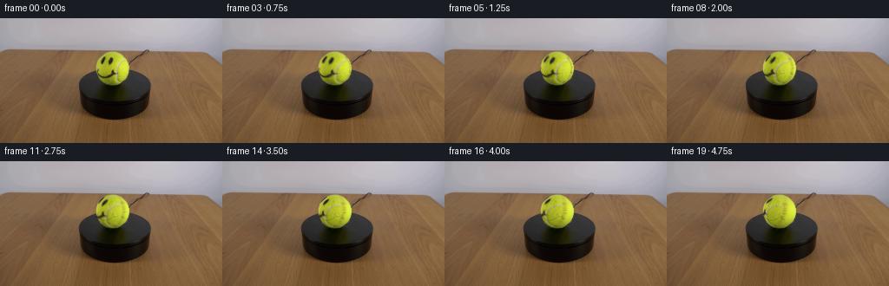
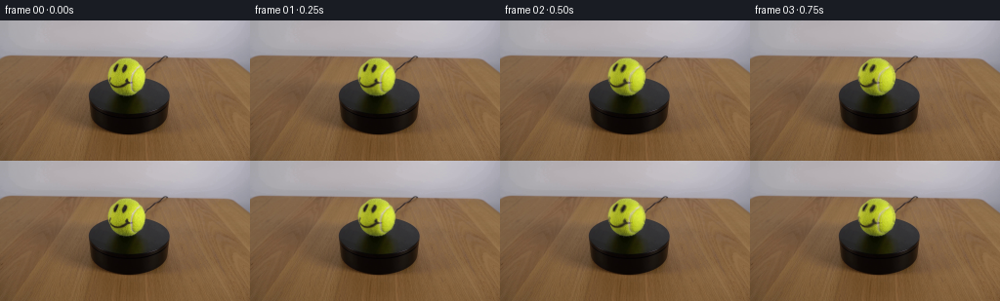

CODING AGENTS AS PIXEL WORLD MODELS
traex/GPT-6.1-Sol · 0167
点击播放 · 原生 RGB 像素
逐轮保存的候选
回放视频、检查图与代码变化。
每份候选均可单独播放。实际图片检查记录在下方工具轨迹中。
候选 01播放与检查图
点击播放 · 原生 RGB 像素


展开代码变化
--- 上一保存版本
+++ 本次保存版本
@@ -0,0 +1,122 @@
+"""Rotate the photographed tennis ball with a spherical surface warp.
+
+The photograph supplies the surface appearance. Geometry and illumination are
+analytic; the camera, support and the room are left entirely unchanged.
+"""
+from pathlib import Path
+import numpy as np
+from PIL import Image
+from scipy.ndimage import map_coordinates, gaussian_filter
+
+import artifact_io
+
+
+ROOT = Path(__file__).resolve().parent
+CX, CY = 129.50, 57.35
+RX, RY = 19.45, 19.50
+
+
+def basis(x, y, z):
+ return np.stack((np.ones_like(x), x, y, z, x*x, y*y,
+ x*y, x*z, y*z), axis=-1)
+
+
+def surface_appearance(photo):
+ """Separate stationary spherical lighting from the moving felt and ink."""
+ yy, xx = np.mgrid[:144, :256]
+ nx = (xx-CX)/RX
+ ny = (yy-CY)/RY
+ rr = nx*nx+ny*ny
+ nz = np.sqrt(np.maximum(0, 1-rr))
+ design = basis(nx, ny, nz)
+ # Only ordinary felt participates in the light fit, not the dark drawing,
+ # cream-colored seam, or the antialiased silhouette.
+ good = ((rr < .90) & (photo[..., 1] > 92)
+ & (photo[..., 2] < photo[..., 1]*.36)
+ & (photo[..., 1] > photo[..., 0]+3))
+ v = design[good]
+ color = photo[good]
+ for _ in range(5):
+ coef = np.linalg.lstsq(v, color, rcond=None)[0]
+ error = color[:, 1] - (v @ coef)[:, 1]
+ keep = (error > -12) & (error < 19)
+ v, color = v[keep], color[keep]
+ light = design @ coef
+ light[..., 1] = np.maximum(light[..., 1], 65)
+ # This small residual carries the original real felt, seam and smiley.
+ residual = (photo-light)/light[..., 1, None]
+ # Discard background-contaminated edge samples. The source fades only at
+ # grazing incidence, after ink features have passed behind the sphere.
+ rho = np.sqrt(rr)
+ feather = np.clip((.992-rho)/.035, 0, 1)
+ feather = feather*feather*(3-2*feather)
+ residual *= feather[..., None]
+ return coef, residual
+
+
+def rotate_vectors(v, axis, angle):
+ ca, sa = np.cos(angle), np.sin(angle)
+ return (v*ca + np.cross(axis, v)*sa
+ + axis*np.sum(v*axis, axis=-1, keepdims=True)*(1-ca))
+
+
+def make_frames():
+ original = np.array(Image.open(ROOT/'first_frame.png').convert('RGB'))
+ photo = original.astype(np.float64)
+ coef, residual = surface_appearance(photo)
+
+ # Four-by-four integration maintains the photograph's soft pixel-scale
+ # silhouette and avoids shimmering along the hand-drawn eyes and smile.
+ S = 4
+ x0, x1, y0, y1 = 108, 151, 36, 79
+ xs = x0+(np.arange((x1-x0)*S)+.5)/S-.5
+ ys = y0+(np.arange((y1-y0)*S)+.5)/S-.5
+ xx, yy = np.meshgrid(xs, ys)
+ nx, ny = (xx-CX)/RX, (yy-CY)/RY
+ r2 = nx*nx+ny*ny
+ nz = np.sqrt(np.maximum(0, 1-r2))
+ normals = np.stack((nx, ny, nz), -1)
+ fixed_light = basis(nx, ny, nz) @ coef
+ fixed_g = np.maximum(fixed_light[..., 1], 65)
+ # World-up projects upwards in the frame and towards the elevated camera.
+ elevation = np.deg2rad(24)
+ axis = np.array([0., -np.cos(elevation), np.sin(elevation)])
+ alpha = np.clip((1.007-np.sqrt(r2))/.024, 0, 1)
+ alpha *= (r2 <= 1.)
+
+ def appearance(angle):
+ source = rotate_vectors(normals, axis, -angle)
+ sx = CX+RX*source[..., 0]
+ sy = CY+RY*source[..., 1]
+ coords = np.array([sy, sx])
+ detail = np.stack([map_coordinates(residual[..., c], coords,
+ order=1, mode='nearest', prefilter=False)
+ for c in range(3)], -1)
+ visible = np.clip(source[..., 2]/.15, 0, 1)
+ visible = visible*visible*(3-2*visible)
+
+ # New surface revealed on the right is unmarked felt, illuminated by
+ # exactly the same stationary light. Its subpixel fuzz is attached to
+ # the surface rather than independently randomized from frame to frame.
+ a, b, c = source[..., 0], source[..., 1], source[..., 2]
+ fuzz = (.008*np.sin(121*a+93*b+47*c)
+ +.005*np.sin(207*a-141*b+84*c)
+ +.004*np.sin(66*a+172*b-109*c))
+ new_detail = fuzz[..., None]*np.array([.93, 1., .28])
+ return detail*visible[..., None]+new_detail*(1-visible[..., None])
+
+ start = appearance(0.)
+ frames = [original.copy()]
+ for i in range(1, 20):
+ # Constant-speed clockwise rotation, as viewed from above the stand.
+ angle = np.deg2rad(64)*i/19
+ changed = (appearance(angle)-start)*fixed_g[..., None]*alpha[..., None]
+ changed = changed.reshape(y1-y0, S, x1-x0, S, 3).mean(axis=(1, 3))
+ frame = photo.copy()
+ frame[y0:y1, x0:x1] += changed
+ frames.append(np.clip(np.rint(frame), 0, 255).astype(np.uint8))
+ return np.stack(frames)
+
+
+if __name__ == '__main__':
+ artifact_io.save(make_frames(), ROOT)
可观测工具轨迹
实际执行的命令与返回图片。
命令 1exit 0
/bin/bash -lc "ls -la && cat prompt.txt && printf '\\n---RULES---\\n' && cat GENERATION_RULES.md"
命令 2exit 0
/bin/bash -lc "cat artifact_io.py && python - <<'PY'
from PIL import Image
import numpy as np
im=np.array(Image.open('first_frame.png').convert('RGB'))
print('shape', im.shape)
for y in range(0,144,3):
s=''
for x in range(0,256,3):
r,g,b=im[y:y+3,x:x+3].mean((0,1))
if max(r,g,b)<30:c='@'
elif max(r,g,b)<60:c='#'
elif max(r,g,b)<90:c='O'
elif max(r,g,b)<120:c='o'
elif g>r*1.1 and g>b*1.2:c='G'
elif r>b*1.35 and g>b*1.2:c='Y'
elif min(r,g,b)>210:c=' '
elif min(r,g,b)>165:c='.'
elif min(r,g,b)>130:c=':'
else:c='-'
s+=c
print(f'{y:3}',s)
print('range',im.min((0,1)),im.max((0,1)))
PY"命令 3exit 0
/bin/bash -lc "python - <<'PY'
from PIL import Image
import numpy as np
im=np.array(Image.open('first_frame.png'))
for y in [0,20,30,35,40,50,60,80,100,120,140,143]:
print(y,[(x,im[y,x].tolist()) for x in [0,10,30,60,90,110,130,150,180,210,240,255]])
print('mode',Image.open('first_frame.png').mode)
PY"命令 4exit 0
/bin/bash -lc "python - <<'PY'
from PIL import Image
import numpy as np
im=np.array(Image.open('first_frame.png')).astype(float)
print('COLOR DIFFERENCE MAP at 1px, x90-175, y15-80')
for y in range(15,81):
s=''
for x in range(90,176):
r,g,b=im[y,x]
if g-r>10 and g-b>50:c='Y' if g>170 else 'y' if g>130 else '+'
elif r-b>30 and r-g>10: c='.'
elif max(r,g,b)<35:c='@'
elif max(r,g,b)<65:c='#'
elif max(r,g,b)<105:c='o'
elif max(r,g,b)<135:c=':'
else:c=' '
s+=c
print(f'{y:3} {s}')
PY"命令 5exit 0
/bin/bash -lc "python - <<'PY'
from PIL import Image
import numpy as np
im=np.array(Image.open('first_frame.png')).astype(float)
# Kmeans ball crop numeric without learning weights external
from scipy.cluster.vq import kmeans2
pix=im[38:78,109:155].reshape(-1,3)
cc,ll=kmeans2(pix,12,minit='++',seed=11)
idx=np.argsort(cc[:,1]); cc=cc[idx]
print('centers',[(chr(65+j),np.round(c).tolist())for j,c in enumerate(cc)])
d=((im[36:80,107:158,None,:]-cc[None,None,:,:])**2).sum(-1).argmin(-1)
print(' '+''.join(str(x//10%10) for x in range(107,158)))
print(' '+''.join(str(x%10) for x in range(107,158)))
for y,row in enumerate(d,36):print(f'{y:02} '+''.join(chr(65+x)for x in row))
PY"命令 6exit 0
/bin/bash -lc "python - <<'PY'
from PIL import Image
import numpy as np
im=np.array(Image.open('first_frame.png')).astype(float)
for y in range(35,80):
g=im[y,:,1];r=im[y,:,0];b=im[y,:,2]
k=np.where((g-b>50)&(g-r>-3)&(np.arange(256)>100)&(np.arange(256)<160))[0]
print(y, (int(k.min()),int(k.max())) if k.size else None)
PY"命令 7exit 0
/bin/bash -lc "python - <<'PY'
from PIL import Image
import numpy as np
im=np.array(Image.open('first_frame.png'))
for y in [37,38,39,40,42,45,50,55,57,60,65,70,73,75,76,77,78]:
print('\\ny',y)
for x in range(108,153):
if (y<43) or x<116 or x>143 or y>72:print(x,tuple(im[y,x]),end='; ')
print()
PY"命令 8exit 0
/bin/bash -lc "python - <<'PY'
import numpy as np
from PIL import Image
im=np.array(Image.open('first_frame.png')).astype(float)
for y in range(39,76):
vals=[]
for x in range(110,150):
r,g,b=im[y,x]
if g>115 and b>g*.47 and r>g-8: vals.append((x,int(r),int(g),int(b)))
print(y,vals)
PY"命令 9exit 0
/bin/bash -lc "mkdir -p .tmp && cat > .tmp/analyze.py <<'PY'
from PIL import Image
import numpy as np
from scipy.ndimage import gaussian_filter
im=np.array(Image.open('first_frame.png')).astype(float)
y,x=np.mgrid[:144,:256]
cx,cy,r=129.5,57.35,19.25
nx=(x-cx)/r;ny=(y-cy)/r;rr=nx*nx+ny*ny;nz=np.sqrt(np.maximum(0,1-rr))
f=np.stack([np.ones_like(nx),nx,ny,nz,nx*nx,ny*ny,nx*ny,nx*nz,ny*nz],-1)
m=(rr<.91)&(im[:,:,2]<im[:,:,1]*.36)&(im[:,:,1]>90)
v=f[m];g=im[:,:,1][m]
for i in range(5):
c=np.linalg.lstsq(v,g,rcond=None)[0]; dif=g-v@c
keep=(dif>-12)&(dif<20)
v=v[keep];g=g[keep]
print('coef',c,'N',len(v),'rmse',np.std(g-v@c))
for y1 in range(40,77,4):
print(y1,[(x1,np.round(f[y1,x1]@c,1),im[y1,x1,1])for x1 in range(112,149,6)])
np.savez('.tmp/shade.npz',coef=c)
PY
python .tmp/analyze.py"命令 10exit 0
/bin/bash -lc "python generate.py && python - <<'PY'
import numpy as np
from PIL import Image
f=np.stack([np.array(Image.open('frames/%02d.png'%i))for i in range(20)])
p=np.array(Image.open('first_frame.png'))
print('frames',f.shape, f.dtype,'f0 equal',np.array_equal(f[0],p))
print('max step and RMS',[(i,int(abs(f[i].astype(int)-f[i-1]).max()),round(np.mean((f[i].astype(float)-f[i-1])**2)**.5,3)) for i in range(1,20)])
for fi in [0,3,8,13,19]:
im=f[fi].astype(float)
print('\\nFRAME',fi)
for y in range(39,77):
line=''
for x in range(109,151):
r,g,b=im[y,x]
if (r-b>25 and r-g>12) or (g<65 and abs(r-g)<7 and b>35):ch=' '
elif g<65:ch='@'
elif g<100:ch='O'
elif g<140:ch='o'
elif b>g*.48:ch='s'
elif g<180:ch='+'
elif g<210:ch='y'
else:ch='Y'
line+=ch
print('%02d '%y+line)
PY"命令 11exit 0
/bin/bash -lc "python - <<'PY'
import generate
import numpy as np
from PIL import Image
im=np.array(Image.open('first_frame.png')).astype(float)
c,res=generate.surface_appearance(im)
print(c)
print('residual extrema',res[40:76,112:148].min((0,1)),res[40:76,112:148].max((0,1)))
for fi in [0,5,10,19]:
f=np.array(Image.open(f'frames/{fi:02}.png'))
print(fi,'saturated black in ball',np.count_nonzero(f[40:76,111:149].min(-1)==0), 'saturated white',np.count_nonzero(f[40:76,111:149].max(-1)==255))
PY"命令 12exit 0
/bin/bash -lc "python - <<'PY'
from PIL import Image
import numpy as np
p=np.array(Image.open('first_frame.png'));q=np.array(Image.open('frames/19.png'))
for y in [46,47,48,49,50,51,61,63,65,67,68]:
print(y,[(x,p[y,x].tolist(),q[y,x].tolist())for x in [117,118,119,126,127,128,129,130,134,136]])
PY"命令 13exit 0
/bin/bash -lc "python - <<'PY'
from pathlib import Path
import numpy as np
from PIL import Image
p=np.array(Image.open('first_frame.png'))
f=np.stack([np.array(Image.open(f'frames/{i:02d}.png')) for i in range(20)])
changed=np.any(f"'!=p,axis=(0,3)); y,x=np.where(changed)
print('"'Changed region:',(int(x.min()),int(y.min()),int(x.max()),int(y.max())))
z=np.load('pixels.npz')['pixels']; print('Artifact shape:',z.shape,'dtype:',z.dtype)
assert np.array_equal(f[0],p)
assert z.shape==(144,256,20)
print('Validated all 20 RGB frames, fixed background, identical first frame.')
PY"保存候选 1 份；完成命令 13 次；可验证图片返回 0 张。原始 API 响应与完整日志保留在本地。